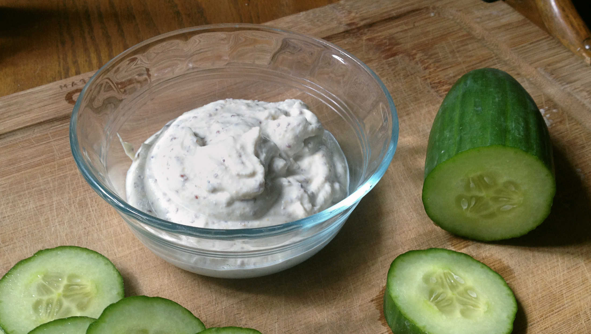

homemade veganaise
1.5 cup — 5 minutes
Recipe location: Montreal, QC. Canada
Making mayo is easy. This is a basic recipe that can be prepared right before eating, and that requires few tools.
It's possible to add other spices and ingredients to augment the flavor of this homemade plant-based mayonnaise, ingredients like smoked paprika, garlic or fresh herbs.
Substitutions
In this recipe it's possible to use olive oil instead of canola. I used canola oil because it has a neutral flavor, while olive oil does not.
Instead of using dijon mustard, you can sub with 1 tsp of mustard powder. If you have a spice grinder or a coffee grinder, you can grind your own mustard powder from whole mustard seeds. If you use mustard powder, you'll have to add 1 extra tbsp of apple cider vinegar to the recipe. In this recipe, I used old style dijon mustard with mustard seeds, which explains the texture present in the veganaise. If you want to know how to make old-style dijon mustard, check out my recipe.
If you prefer sweeter venagaise, add 1/2 tsp of a sweetener.
 soft tofu 250g
soft tofu 250g canola oil 3 tbsp
canola oil 3 tbsp apple cider vinegar 1 tbsp
apple cider vinegar 1 tbsp lemon juice 1 tsp
lemon juice 1 tsp dijon mustard 3 tbsp
dijon mustard 3 tbsp salt 1/4 tsp
salt 1/4 tsp
veganaise
- Blend 1 cup of soft tofu, 3 tbsp of olive oil, 2 tbsp apple cider vinegar, 3 tbsp dijon mustard and 1/4 tsp salt.